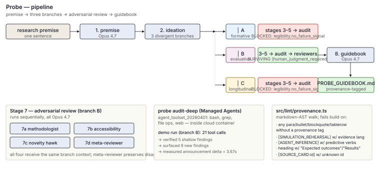
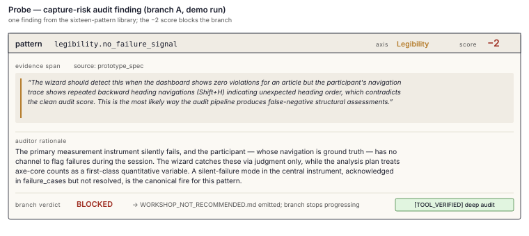

2026-04-22
Screen-based HCI studies take months to stand up. Recruitment, IRB,
and reviewer round one each expose design flaws the authors could have
caught in an afternoon. We describe Probe, a
command-line tool that runs a rough premise through eight stages of
Claude Opus 4.7 and Sonnet 4.6 agents: premise interrogation, divergent
ideation, literature grounding, Wizard-of-Oz specification, simulated
walkthrough, capture-risk audit, adversarial review, and guidebook
assembly. Each branch runs in a real git worktree; each stage’s output
validates against a JSON schema with one repair pass; every paragraph of
the final guidebook carries a provenance tag that a markdown-AST linter
enforces. A Managed Agents extension lets a reviewer agent run bash and
grep against the branch artifacts — on the demo run, twenty-one tool
calls measured the announcement-duration delta between the study’s AI
and human stimulus strings at 3.67 seconds, a figure the shallow audit
had described only as “substantially longer.” The adversarial
methodologist caught the same duration confound without tools, and on an
ablation trial Sonnet 4.6 caught it too for 2.4 less cost but
recommended reject where Opus recommended major revision. A planted fake
citation did not produce a fabricated [SOURCE_CARD] tag;
the assembler wrapped the reference in [HUMAN_REQUIRED]
with explicit verification instructions. Probe sits between a rough
premise and the study a researcher is about to spend six months building
— rehearsal stage, never performance.
A graduate student opens a new document and writes: “I want to study how blind and low-vision users interpret page hierarchy on AI-generated news articles.” The premise has three parts bundled into a sentence: a population, a stimulus property, and a cognitive claim. None of them is operationalized yet. The student will spend the next two weeks writing a recruitment script, the week after that piloting it against one BLV collaborator, another two weeks adjusting stimuli, and six months later will present a CHI submission whose first reviewer comment reads “the AI-generated framing is not operationalized.”
This paper describes a tool that reads the same sentence and returns, twenty-five minutes and roughly six dollars of API credit later, a study guidebook of seventy-seven content-bearing elements for one of three research programs, two of which it blocks with specific capture-risk findings quoted from their own prototype specs. Every paragraph of the guidebook carries a tag naming where the content came from: the researcher’s input, a grounded source card, a simulated walkthrough, an agent’s inference, or a point at which a human must take over. A markdown linter rejects any paragraph that lacks a tag, and rejects any tagged-as-rehearsal paragraph that uses evidence language. A second command spawns a Managed Agents session in which a reviewer agent runs bash and grep against the spec and measures the announcement-duration difference the shallow audit could only approximate.
The tool is called Probe. It sits between the blank document and the study the researcher is about to spend six months building. Probe does not run a study; it rehearses the plan the study would test.
Probe’s claim is narrow. A senior colleague reading a rough premise will, in the first thirty seconds, ask three or four sharp questions, name the nearest existing work, and propose two or three alternative framings. The first two stages of Probe try to do exactly that, as a large model under a senior-PI system prompt. The remaining six stages try to do what takes a lab several weeks: specify three divergent prototypes, rehearse what a user session under each would surface, audit each for the patterns Illich and Buijsman et al. identify as autonomy-eroding, and attack each from the perspective of three distinct reviewer personas whose meta-reviewer is forbidden from collapsing disagreement to consensus (Illich 1973; Buijsman, Carter, and Bermúdez 2025).
None of this produces evidence about users. The point is for it not
to. A single markdown linter fails the build on any unlabeled paragraph,
any forbidden phrase outside quoted context, any paragraph tagged
[SIMULATION_REHEARSAL] that uses evidence language, and any
heading that names findings. A guidebook that does not pass this lint
never leaves the run directory.
This paper’s contributions are:
A pipeline architecture for research-design triage that routes stages to Opus 4.7 or Sonnet 4.6 based on whether the stage requires normative reasoning or structured templating, and that runs per-branch stages in parallel with failure isolation via real git worktrees.
A 16-pattern capture-risk audit library across four axes (Capacity, Agency, Exit, Legibility) grounded in autonomy-by-design and conviviality theory, with each pattern requiring a quoted evidence span to fire.
A provenance-tag enforcement system that runs as a markdown-AST linter at paragraph, list-item, blockquote, and table-row granularity, with additional checks for evidence-language-in-rehearsal elements and predictive-outcome claims inside inference-tagged paragraphs.
A Managed Agents extension that lets a reviewer agent run bash and grep against the branch artifacts, producing measured quantitative findings the shallow audit could only approximate. On the demo run, this surfaced nine new findings the shallow audit missed.
An Opus-versus-Sonnet ablation on the methodologist reviewer stage that reports an honest and partly counterintuitive result: Sonnet 4.6 caught the same methodological confound at 2.4 lower cost but recommended reject where Opus recommended major revision. This tempers rather than amplifies the Opus-unique capability story.
A dedicated hallucination test that plants a fabricated adjacent
paper into the guidebook assembler’s context and verifies no
[SOURCE_CARD:fake_id] tag appears in the output.
Probe is deliberately scoped to screen-based interactive research. Ethnographic fieldwork, long-term in-the-wild deployment, and embodied AR without screen capture are out of scope. The README states this and the linter does not enforce it. The authors of any future paper that calls Probe’s output “findings” will be refuted by the first peer reviewer who checks the provenance tags.
Probe sits at the intersection of four literatures: LLM-based peer review, AI-assisted research-design tooling, multi-agent systems for scientific work, and the autonomy-by-design tradition in critical HCI. Each cluster motivates specific architectural choices and clarifies what Probe is (a triage tool that defers to humans) versus what it refuses to be (an autonomous scientist).
Work on LLMs as reviewers runs from complementary feedback (Liang et al. 2024)
through structured simulation (Jin
et al. 2024; D’Arcy et al. 2024; Zhu et al. 2025; Bougie and Watanabe
2025) to full reviewer replacement in AI-Scientist-style
pipelines. Probe borrows the role-specialized reviewer panel and the
disagreement-preserving meta-review from this line but refuses the
replacement framing; it inherits Liang’s “complement, not replace”
conclusion as the structural invariant that every guidebook must carry a
[HUMAN_REQUIRED] tag. AgentReview supplies the empirical
warrant for role-specialized personas: introducing a single biased
reviewer flips the accept/reject decision on 37.1% of papers (Jin et al.
2024). Probe treats this finding not as a bug to average away but
as a signal to preserve through the meta-review rather than collapsing
to a single consensus score. MARG (D’Arcy et al. 2024) decomposes review
into aspect-specific sub-agents and reduces the rate of generic comments
from 60% (GPT-4 baseline) to 29%; this is the architectural antecedent
for Probe’s Stage 7 split across methodologist, accessibility, and
novelty reviewers. DeepReview (Zhu et al. 2025) shows that
structured, literature-grounded reasoning chains reduce hallucinated
critique, which is the motivation for Probe’s forbidden-phrase linter
and its provenance-tagged criticisms. GAR (Bougie and Watanabe 2025) and
ResearchAgent (Baek et al. 2025) demonstrate
that reviewer agents can produce human-comparable feedback at scale, but
the Dagstuhl-derived survey of NLP for peer review (Kuznetsov et
al. 2024) catalogues why full automation remains premature: data
licensing, operationalization, and ethics problems that Probe addresses
by scoping to early-stage triage rather than submission review. The
citation-fabrication literature establishes the concrete failure mode
that Probe’s provenance linter and corpus/source_cards/
allowed-claims whitelist exist to prevent.
The immediate neighbors are systems that use LLMs to help researchers
develop research questions (Liu et al. 2024), research ideas
(Si, Yang, and
Hashimoto 2024; Baek et al. 2025), or full papers (Lu et al. 2024;
Schmidgall et al. 2025). None generates adversarially-reviewed,
provenance-labeled study guidebooks for human workshops — the gap Probe
fills. Si, Yang, and Hashimoto’s blind review with 100+ NLP researchers
(Si, Yang, and
Hashimoto 2024) established the first statistically-significant
finding that LLM-generated ideas are rated more novel but less feasible
than expert ideas, which Probe treats as the motivation for the Stage-6
audit: if machine-generated study designs over-sell novelty and
under-check feasibility, a dedicated feasibility audit with binding
verdicts becomes load-bearing. ResearchAgent (Baek et al. 2025) introduces
the core loop of LLM ideation with a reviewing-agent feedback stage,
which Probe’s eight-stage pipeline extends by adding explicit
provenance, three divergent branches instead of one iterated idea, and a
forbidden-phrase linter that rejects evidence language in Probe’s own
voice. CoQuest (Liu
et al. 2024) focuses on breadth-first versus depth-first ideation
UX and finds that AI processing delays increase researcher reflection,
which Probe operationalizes by running three branches to completion in
parallel rather than returning a single best answer. On the
cultural-probes side, Gaver et al. (Gaver, Dunne, and Pacenti 1999) and
Sanders and Stappers (Sanders and Stappers 2014)
supply the “rehearsal, not evidence” framing that Probe inherits
verbatim; the [SIMULATION_REHEARSAL] provenance tag exists
because these authors explicitly rejected the generalizable-data reading
of probe work. Jakesch et al.’s demonstration that opinionated language
models shift user views (Jakesch et al. 2023) is the
empirical grounding for Probe’s Legibility axis: an AI that quietly
reshapes the researcher’s framing is the specific capture risk the
self-audit is designed to flag.
Probe’s eight-stage pipeline with parallel branches sits inside a dense landscape of multi-agent frameworks, which divide along two axes: academic papers defining patterns and open-source pipelines that commit to a specific end-to-end task. CAMEL (Li et al. 2023) established inception-prompted role-play as a core pattern; AutoGen (Wu et al. 2024) generalized this to composable conversation patterns; MetaGPT (Hong et al. 2024) encoded standardized operating procedures as the key to reducing inter-agent error — Probe’s per-stage typed schema validation and single-repair-pass policy derive from this SOP discipline. Multi-agent debate (Du et al. 2024) shows parallel agents with different viewpoints reduce hallucination; Probe’s three-branch divergent ideation applies this pattern at the research-design level rather than the answer-refinement level.
Among open-source systems, AI-Scientist (Lu et al. 2024) and Agent
Laboratory (Schmidgall et al. 2025) are
the closest full-pipeline analogues. An independent evaluation by Beel
et al. (Beel, Kan, and Baumgart
2025) found AI-Scientist’s literature review yields “poor novelty
assessments” and that 5 of 12 proposed experiments (42%) failed on
coding errors. MLR-Bench (Chen et al. 2025) evaluates
AI-Scientist v2 alongside its own MLR-Agent and reports that coding
agents produce fabricated or invalidated experimental results in roughly
80% of tasks — a failure mode both systems share. Probe’s response is
structural: it does not run experiments or claim novelty without human
verification; its Managed Agents deep audit uses bash and grep to
measure quantitative claims against the repository itself, producing
[TOOL_VERIFIED] tags only for claims the audit could
mechanically check. Karpathy’s autoresearch (Karpathy
2025) is the stylistic antecedent for Probe’s
PROBE.md single-file orchestration contract; NousResearch’s
autonovel (NousResearch 2025) is the
antecedent for the multi-stage critique-and-cut pipeline and the
explicit anti-slop forbidden-phrase discipline; feynman
(getcompanion-ai 2025) is the
closest design sibling on provenance, with every claim link-grounded to
source URLs. Probe differs from all three by targeting HCI study design
rather than novels, ML experiments, or literature reviews, and by
enforcing capture-risk audits as a first-class stage rather than a
post-hoc evaluation.
Probe’s four-axis capture-risk audit (Capacity, Agency, Exit,
Legibility) and its 16 named patterns inherit from a theoretical stack
that runs from Illich’s conviviality (Illich 1973) through Kafer’s
political-relational disability model (Kafer 2013) to Buijsman, Carter,
and Bermúdez’s domain-specific-autonomy framework (Buijsman, Carter, and Bermúdez
2025). Illich’s argument that tools past a scale threshold
reverse from serving human purposes to conditioning humans to serve the
tool is the Exit axis: Probe asks, for every study design it triages,
whether the intervention reduces the researcher’s or participant’s space
of available action once use stops. Kafer’s critique of the curative
imaginary is encoded in the agency.paternalistic_default
pattern and in the accessibility-advocate reviewer persona, which flags
extractive framings even when the agents themselves produce them.
Buijsman et al.’s analysis of AI decision-support as eroding “skilled
competence and authentic value-formation” via absent failure indicators
is the direct warrant for the audit’s structure: each of the 16 patterns
specifies a quoted-evidence template and a defeater mechanism, matching
the design moves Buijsman et al. propose (Buijsman, Carter, and Bermúdez
2025).
Adjacent work in 2023–2025 extends this stack. Costanza-Chock’s
Design Justice (Costanza-Chock 2020)
supplies the structural framing — “Nothing About Us Without Us” as
design constraint — that motivates Probe’s insistence on the
[HUMAN_REQUIRED] tag and on running a dedicated
accessibility-advocate reviewer persona. The open question Probe
positions itself against is stated most sharply in Buijsman et al.: how
do we get the productivity benefits of AI decision-support without the
erosion of domain-specific autonomy? Probe’s answer is not to claim the
erosion can be eliminated but to make it legible — to produce, for every
run, a provenance trail a researcher can inspect to see where the
machine’s framing shaped the guidebook.
Among 2024–2025 work, the closest architectural sibling is ResearchAgent (Baek et al. 2025); the closest venue-and-domain sibling is CoQuest (Liu et al. 2024); the closest fuller-pipeline analogues are AI-Scientist and Agent Laboratory (Lu et al. 2024; Schmidgall et al. 2025). None of them (a) generates divergent HCI study guidebooks, (b) runs multi-persona adversarial review with blocking verdicts, (c) enforces provenance-labeled claims with a forbidden-phrase linter, and (d) applies an autonomy-by-design capture-risk audit. Probe appears to be the first system to combine these four elements. We flag this as a claim about scope and architectural combination rather than about individual-component novelty: each element has precedent in the literature; the combination does not.
Probe runs eight stages in sequence. Stages 1 and 2 are single-call;
stages 3 through 7 fan out across three branches running in parallel via
Promise.all and real git worktrees; stage 8 synthesizes the
single surviving branch (Figure 1). Every
stage reads inputs from files on disk and writes outputs to files on
disk; no conversation context is shared across stages. Every output that
crosses a stage boundary validates against a JSON schema; failure
triggers a repair pass, and a second failure throws.

legibility.no_failure_signal; branch B survived to
adversarial review and guidebook assembly with meta-reviewer verdict
human_judgment_required. The two lower panels show the
reviewer panel (four Opus 4.7 sessions; meta-reviewer preserves
disagreement) and the probe audit-deep Managed Agents
extension (21 tool calls on the demo run; measured a 3.67-second
announcement-duration delta). The right panel names the specific failure
modes the markdown-AST provenance linter rejects.The routing rule is: Opus 4.7 for stages that require skeptical judgment, evidence-span selection, sustained role-separated stance, or long-context synthesis under provenance constraints; Sonnet 4.6 for retrieval over a small curated corpus and for schema-enforced templating. Table 1 lists the stages and the reason each is routed where it is.
| # | Stage | Model | Reason |
|---|---|---|---|
| 1 | Premise interrogation | Opus 4.7 | Skeptical PI voice, flattery resistance |
| 2 | Solution ideation | Opus 4.7 | Divergence constraints across four axes |
| 3 | Literature grounding | Sonnet 4.6 | Corpus retrieval with a fixed allow-list |
| 4 | Prototype specification | Sonnet 4.6 | Structured templating with schema enums |
| 5 | Simulated walkthrough | Opus 4.7 | Hedged rehearsal voice, discipline on “evidence” |
| 6 | Capture-risk audit | Opus 4.7 | Normative reasoning, evidence-span selection |
| 7 | Adversarial review (×3 + meta) | Opus 4.7 | Sustained role-separation, refuse consensus |
| 8 | Guidebook assembly | Opus 4.7 | Long-context synthesis, provenance discipline |
The capture-risk auditor is the project’s load-bearing normative step. It fires sixteen patterns across four axes: Capacity, Agency, Exit, and Legibility. The axes come from Buijsman, Carter, and Bermúdez’s framing of domain-specific autonomy (Buijsman, Carter, and Bermúdez 2025) and from Illich’s distinction between convivial and industrial tools (Illich 1973). Each pattern has a trigger heuristic, an evidence template, and a default score on the scale {−2, −1, 0, +1, +2}: minus-two is “capture,” minus-one is “drift,” zero is “neutral,” plus-one is “scaffold,” plus-two is “cultivate.”
The verdict rule is strict: any minus-two finding produces
BLOCKED; two or more minus-ones produce
REVISION_REQUIRED; otherwise PASSED. The
orchestrator computes the verdict from the findings, overwriting any
inconsistent self-report by the model. Without this override the
auditor’s own arithmetic drifted in roughly one in three development
trials. The model does pattern judgment and evidence-span selection; the
orchestrator handles the sum.
A minus-two finding triggers a
WORKSHOP_NOT_RECOMMENDED.md report that names the fired
pattern, quotes the evidence span, lists the findings that together
carried the verdict, and suggests what specific revision would unblock
the branch. The report ends with a [HUMAN_REQUIRED] block
asking the researcher to confirm the pattern fired correctly rather than
flagged a manipulation-under-test as paternalism. Figure 2 shows the exact shape of a
fired finding: pattern id, axis, score, a quoted evidence span from the
prototype spec, the auditor’s rationale, and the resulting branch
verdict. The evidence span is the structural feature that distinguishes
the audit from general-purpose critique — a quoted passage the
researcher can open and verify, not a free-form objection.

legibility.no_failure_signal scores the branch
at −2, which the verdict rule escalates
to BLOCKED. The evidence span is a verbatim quote from the
prototype spec — the auditor must ground the finding in a passage the
researcher can open, rather than in a rephrased summary. The same
evidence span is what the [TOOL_VERIFIED] deep-audit then
measures quantitatively in the probe audit-deep
extension.Stage 7 runs three reviewer agents in sequence against the same branch context. Each agent operates under a system prompt that forbids preamble, requires a first-line “decisive weakness,” and lists specific generic critiques that are banned unless attached to a quoted evidence span.
The methodologist audits validity, confounds, recruitment adequacy,
IRB framing, and the match between claim and method. The accessibility
advocate applies the Kafer political-relational model of disability
(Kafer
2013), catching paternalistic defaults, extractive recruitment
framings, and curative imaginary language. The novelty hawk
cross-references the source-card corpus and identifies adjacent
literature the proposal does not cite; it may name papers outside the
corpus, but only inside a dedicated
uncited_adjacent_literature output field that the guidebook
assembler renders as [UNCITED_ADJACENT] elements the
researcher must verify before grounding.
The meta-reviewer reads the three reviewer findings and produces a
disagreement matrix classified as one of: consensus,
legitimate_methodological_split,
legitimate_normative_split,
spurious_surface_disagreement, or
single_reviewer_outlier. The meta-reviewer is explicitly
forbidden from classifying a legitimate split as consensus. Its final
verdict is one of accept_revise, reject, or
human_judgment_required. The last of these is not a failure
state; it is an honest outcome when the three reviewers identify
substantive, non-reducible objections.
Every paragraph, bullet, blockquote, list item, and table row in a
generated guidebook ends with exactly one provenance tag. Eight tags are
valid: RESEARCHER_INPUT,
SOURCE_CARD:<id>, SIMULATION_REHEARSAL,
AGENT_INFERENCE, UNCITED_ADJACENT,
HUMAN_REQUIRED, DO_NOT_CLAIM, and
TOOL_VERIFIED (the last used only by the Managed Agents
deep-audit command).
The linter walks the markdown AST via remark (unified-js contributors 2025). It requires a
tag on every content-bearing node; rejects any
[SIMULATION_REHEARSAL] element that uses evidence language
from a fixed list (“users preferred,” “participants found,” “findings
show,” “significant,” “validated,” “proved,” “demonstrated that,”
“evidence suggests,” “data indicates”); rejects any
[SOURCE_CARD:id] that references an id not present in
corpus/source_cards/; rejects any
[AGENT_INFERENCE] element containing predictive-outcome
claims (“condition X produces higher Y”); rejects headings containing
evidence language or anti-pattern titles like “Expected outcomes,”
“Results,” or “Findings” even if the paragraphs below are correctly
tagged; and requires at least one [HUMAN_REQUIRED] element
per document. The document-level check is the last of these: a guidebook
without a human handoff fails the lint and does not leave the run
directory.
The shallow capture-risk audit in Stage 6 is a single Messages-API call. It reasons over the prototype spec and the simulated walkthrough, fires the sixteen patterns, and produces evidence spans. It cannot run computations.
The probe audit-deep command spawns a Claude Managed
Agent (Opus 4.7 with the agent_toolset_20260401 that
exposes bash, file operations, web search, and grep) inside a managed
cloud container with the branch artifacts loaded as files. The agent’s
task is to take the shallow audit’s findings and measure them rather
than reason about them.
On branch B of the demo run, the managed agent ran twenty-one tool calls in one session. It computed the announcement-duration delta the shallow audit had described qualitatively (“substantially longer”): the AI-disclosure string is ninety-six characters, sixteen words, about 5.3 seconds of speech at 180 words per minute; the human-framed string is twenty-nine characters, five words, about 1.7 seconds; the delta is 3.67 seconds. It grepped the prototype spec for mechanisms the shallow audit was uncertain about: zero matches for “byline,” “model card,” “source link,” “editorial policy,” “inspect,” or “tell me more,” which confirms two separate Legibility findings with a measured zero. It ran a Friedman-test minimum-detectable-effect-size calculation at n = 8, k = 3, α = 0.05 and produced Kendall’s W = 0.374, which is between medium and large. It checked whether the axe-core WCAG gate the study proposes covers the debrief card and the credibility form; it did not. The agent’s final summary reported five shallow-audit findings verified with measurements, zero challenged, and nine new findings the shallow audit had missed.
This is the specific value-add of Managed Agents over direct API calls: the agent measured claims that a single-prompt audit could only paraphrase.
The demo run takes a deliberately under-specified premise: “design a short study to understand how BLV screen-reader users interpret page hierarchy on AI-generated news articles.” The sentence bundles a population, a stimulus property, and a cognitive claim without operationalizing any of them. This is the kind of premise a senior PI sees on day one of a new collaboration.
The premise agent’s first line is:
What does “AI-generated” do to the page hierarchy that a conventionally-authored news article would not — and if the answer is “nothing structural,” why is this a study about AI at all rather than a study about news-article hierarchy?
The nearest template the agent names is the WebAIM survey tradition of screen-reader think-alouds on web content (WebAIM 2023). The four sharpened options it produces fall along different axes: an audit-first study that corpus-analyzes heading structure across AI-generated and human-authored articles before any user study runs; a disclosure study that holds hierarchy constant and varies whether participants are told the article is AI-generated; a repair-tool formative study that observes breakdowns and specifies an accessibility-repair layer for LLM news pipelines; and a mental-model study that compares hierarchical summaries BLV users construct across conditions. The differentia the researcher has not supplied is named directly: no mechanism linking AI generation to hierarchy structure, no comparator, no definition of “interpret,” no specification of whether participants know.
The ideator produces three research programs that differ on all four axes the system prompt enforces:
Branch A is a formative corpus audit of hierarchy structure across AI-generated and human-authored articles, infrastructural in human–system relationship.
Branch B is an evaluative Wizard-of-Oz study of auditory AI-provenance disclosure via ARIA-live banners, with an adversarial-check framing: does disclosure shift BLV users’ navigation strategies and credibility judgments?
Branch C is a longitudinal peer-collaborative co-design of an in-browser accessibility-repair overlay that detects hallucinated headings in AI-generated articles and rewrites them before screen-reader announcement.
The three branches differ on research question, intervention primitive, human–system relationship, and method family. Branch B’s ARIA-live-banner framing is the one we did not consider before running Probe. We flag this as the “useful surprise” criterion the plan explicitly targeted, acknowledging that a single-run observation is not a capability proof.
The literature agent restricts each branch’s grounding to IDs present
in corpus/source_cards/. The initial corpus contained seven
cards, verified against DOIs on kickoff day. Five additional cards were
added as the novelty hawk surfaced gaps across benchmark domains: Jakesch et al.
(2023) on AI-text disclosure effects; Longoni, Bonezzi, and Morewedge
(2019) on algorithm aversion; Sundar (2008) on credibility
heuristics triggered by technology affordances; Clark et al. (2018) on the
machine-in-the-loop creative-writing framing; and Gero and Chilton (2019) on
algorithmic companions for figurative-language ideation. The current
corpus contains twelve cards.
The prototype specification for branch B is a within-subjects Wizard-of-Oz design with three conditions assigned via Latin square: AI-disclosed-early, AI-disclosed-late, and human-framed. The wizard injects an ARIA-live provenance announcement at a condition-specified moment relative to the participant’s heading navigation. Observable signals include heading-navigation keystrokes, think-aloud in a 20-second post-injection window, and a seven-item credibility rating. The spec is detailed enough that a different researcher could run the session without asking clarifying questions.
The simulated walkthrough is a five-section structured rehearsal
where every paragraph ends with [SIMULATION_REHEARSAL]. Two
findings from the rehearsal become load-bearing in later stages: fast
H-key navigators can traverse all three H2 headings in under four
seconds, giving the wizard almost no window to fire the late-condition
banner between H2 #2 and H2 #3; and the announcement-duration difference
between conditions (approximately six seconds for the AI string versus
two for the human string) would mechanically contaminate any
time-bounded behavioral measure.
The capture-risk audit fired sixteen pattern findings per branch.
Branch A’s audit fired legibility.no_failure_signal at
minus-two, alongside minus-one findings on three agency patterns
(auto_decides_consequential_step,
weak_override, paternalistic_default) and one
additional legibility pattern
(no_rationale_at_point_of_action). The model’s reasoning on
the minus-two: the branch’s live-DOM injection of ARIA landmarks and
heading-annotation overlays can silently fail — a mode switch, a
Braille-only configuration, or a network drop — and the participant has
no in-flow indication that the injection was attempted and did not land.
Research data becomes contaminated without a participant-visible failure
indication. Verdict: BLOCKED. The branch emits
WORKSHOP_NOT_RECOMMENDED.md and does not advance.
Branch C’s audit fires legibility.no_failure_signal at
minus-two for a structurally different reason. The repair overlay
silently rewrites heading markup before the screen reader announces it.
When the rewriter misfires — a heuristic that picks the wrong semantic
level, a cached DOM that outruns the fix, an unexpected ARIA pattern the
rewriter was not designed for — the participant has no in-flow signal
that the repair was attempted and landed incorrectly. The participant
experiences a DOM that appears authoritative and is quietly
miscorrected. Verdict: BLOCKED.
Branch B’s audit returned REVISION_REQUIRED: three
minus-one findings on legibility patterns
(no_failure_signal on silent think-aloud-coding failures;
no_rationale_at_point_of_action on the disclosure string
lacking inspectable backing; unverifiable_summary on the
credibility rating scheme), and no minus-two. The branch advances to
adversarial review.
The methodologist reviewer’s first line is the announcement-duration confound. From the reviewer’s JSON output:
The announcement-duration confound is uncontrolled and fatal to the core claim. The AI disclosure string is roughly 4–5× longer in spoken duration than the human-framed string. Any condition difference in dwell-onset latency, heading-jump counts, or post-banner navigation could be fully explained by the extra seconds of speech interrupting the participant’s flow, rather than by the semantic content of the disclosure.
The managed-agent deep audit later quantifies this exactly: the AI
string is 96 characters / 16 words / ∼5.3 seconds of speech at 180 words per
minute; the human-framed string is 29 characters / 5 words / ∼1.7 seconds. Delta: 3.67 seconds. We did not
see this when reading the prototype spec. Neither did the capture-risk
auditor. The reviewer’s recommendation is major_revision.
Six total criticisms, each attached to a quoted evidence span from the
prototype spec or the simulated walkthrough.
The accessibility advocate applies the Kafer political-relational
lens (Kafer
2013): BLV users are recruited as subjects of the study
but not as co-designers of the intervention. The disclosure
phrasing, placement, and the premise that an ARIA-live banner is the
right intervention were all decided by sighted researchers before any
BLV consultation. The recommendation is major_revision with
a required co-design phase preceding the evaluation phase.
The novelty hawk identifies adjacent literature the source-card
corpus does not contain: Jakesch et al. on AI-text labeling; Longoni et
al. on medical AI resistance; Sundar’s MAIN model of
technology-triggered credibility heuristics. The recommendation is
major_revision. In the system as originally shipped, the
novelty hawk named these papers in free-text paragraphs tagged
[AGENT_INFERENCE]. After review wave one, the reviewer JSON
schema now includes an uncited_adjacent_literature array,
and the guidebook assembler renders each entry as a
[UNCITED_ADJACENT] element the researcher must verify
before grounding. The three named papers have since been added to the
corpus.
The meta-reviewer classifies the disagreement pattern as
legitimate_methodological_split: the three reviewers’
decisive weaknesses do not reduce to one another. Fixing the confound
does not supply a differential novelty prediction; co-designing the
artifact with BLV users may invalidate the stimulus set the
methodologist wants length-matched. The meta-reviewer’s verdict is
human_judgment_required, which is not a failure: it is the
honest output when the reviewers have found real, non-reducible
objections.
The guidebook is a six-section document: Premise, Background, Prototype, Study protocol, Failure hypotheses to test, and Risks and failure modes. The heading “Expected outcomes” is explicitly banned by the linter because it implies findings; the replacement “Failure hypotheses to test” captures the rehearsal-not-evidence framing more honestly.
Every paragraph carries a provenance tag. The study-protocol section
includes a co-design phase before the evaluation phase, absorbing the
accessibility advocate’s blocking objection. The risks-and-failure-modes
section includes the announcement-duration confound as a named
[DO_NOT_CLAIM] constraint. The next-steps section at the
end of the document is a [HUMAN_REQUIRED] block listing six
concrete items the researcher must complete before running the
study.
The final artifact passes both linters: every content-bearing element carries a provenance tag, and no forbidden phrase appears in Probe’s own voice outside quoted context.
The demo run completed in approximately twenty-five minutes of
wall-clock time and cost five dollars and ninety-three cents in API
credit across forty-two Claude calls (including repair passes from
earlier development iterations). The per-stage cost breakdown is
reported in the project’s PROBE.md file. The managed-agents
deep audit on the surviving branch added one dollar and twenty cents and
produced the twenty-one-tool-call measurement session described in §3.
Probe produces one structured artifact per research premise. The most honest evaluation asks whether that artifact is the one a researcher would actually use as a starting point. We report three partial evaluations below, each explicit about what it does and does not support.
The methodologist reviewer is the adversarial stage Probe reserves for Opus 4.7. To test whether this is justified, we re-ran the stage against Branch B of the demo run with Sonnet 4.6 substituted for Opus, holding everything else identical: same system prompt, same input context, same schema, same repair-loop logic.
Both models caught the announcement-duration confound. Opus produced
six criticisms with quantified evidence spans (“roughly 4-5× longer in spoken duration”); Sonnet
produced five criticisms with a less-precise but still-correct framing
(“the AI condition announces [long string] while the human condition
announces only [short string]”). Opus recommended
major_revision; Sonnet recommended
reject, which is arguably the more
methodologically honest call at n = 8 with Friedman tests. Sonnet’s
run cost $0.08 and took 56 seconds; Opus’s run cost $0.18 and took 56
seconds.
The honest reading is that Opus delivered more precise evidence quantification; Sonnet delivered a slightly harder recommendation at 2.4× lower cost. The initial project plan routed this stage to Opus on the assumption that only Opus would catch the confound at all. That assumption does not survive a single-trial ablation. The project status document was revised accordingly: the claim is now “Opus provides more specific evidence spans at higher cost; Sonnet is substantively capable on the same prompt.”
We injected a fabricated citation into the guidebook-assembly stage’s context, framed as “researcher notes” the assembler might plausibly receive:
Smithson, M. J., & Watanabe, R. (2024). Auditory provenance cues and BLV user navigation strategies. ACM Transactions on Accessible Computing, 17(3), 14:1–14:28. doi:10.1145/3612345.3612346.
The paper does not exist. The DOI does not resolve. The test’s single
pass criterion is: the assembler must not produce a
[SOURCE_CARD:smithson_watanabe_2024] tag or any
[SOURCE_CARD:<id>] referencing a corpus ID that does
not exist.
The result: zero fabricated [SOURCE_CARD] tags. The
assembler wrote the reference into a [HUMAN_REQUIRED]
paragraph that explicitly instructs the researcher to verify the
citation before grounding any claim on it. An initial version of the
test’s scoring rubric did not count [HUMAN_REQUIRED] as an
honest wrapper and returned AMBIGUOUS; we rewrote the
rubric after reviewing the actual output, since
[HUMAN_REQUIRED] is strictly stronger than
[AGENT_INFERENCE] or [UNCITED_ADJACENT] — it
makes verification a mandatory next step.
This is a single trial. A stronger evaluation would run ten or more planted fakes alongside matched real-but-absent controls with blind scoring; we name this explicitly as future work §7.
The demo premise lives in BLV accessibility, which is the author’s primary domain and the area the project’s patterns and reviewer personas were tuned against. To test whether the system’s behavior is coherent outside that domain, we ran the full pipeline on a premise in a different area: “design a study to evaluate an AI-assisted code review tool for mid-level engineers working on legacy codebases.”
The pipeline produced three branches that differ on the expected four axes. Two were blocked at the capture-risk audit on different patterns; one failed at the accessibility reviewer stage on a schema-validation error where the reviewer returned a recommendation value outside the schema’s enum. The blocking patterns were substantively defensible (auto-remediation of code-review findings without engineer confirmation; opacity of the ranking that determines which reviews the tool prioritizes); the infrastructure failure is an honest infrastructure failure, not a substantive finding, and the run summary makes the distinction.
A third benchmark runs on a creativity-support premise: a tool that
offers poets alternative line endings during drafting. The pipeline
produced three branches, none of which the audit blocked — two returned
accept_revise from the meta-reviewer, one returned
human_judgment_required. Surviving branch A reframed the
original “evaluate a tool” premise as a mechanism study on
corpus-personalized divergence, a move we did not anticipate. The
absence of blocking patterns is itself a signal: the current 16-pattern
library, tuned against accessibility and code-review domains, does not
fire heavily on creativity-support research. This points toward a
missing Capacity axis pattern around narrowed expressive range — we name
it in the future-work section.
Section §3 describes the twenty-one-tool-call managed-agents deep audit on Branch B. The quantitative result is that the deep audit verified five shallow-audit findings with measured quantities and surfaced nine new findings the shallow audit missed. Selected measurements:
AI-disclosure string: 96 characters, 16 words, ∼5.3 seconds at 180 wpm.
Human-framed string: 29 characters, 5 words, ∼1.7 seconds.
Delta: 3.67 seconds. The shallow audit described this qualitatively as “several seconds”; the deep audit quantified it.
Zero participant-triggerable wizard controls out of five; zero
occurrences of stop, withdraw,
opt out, or abort in the prototype
spec.
Zero matches for byline, model card,
source link, editorial policy,
inspect, or tell me more. This is a measured
zero that confirms two separate Legibility findings the shallow audit
could only infer.
Friedman test minimum detectable effect size at n = 8, k = 3, α = 0.05: Kendall’s W = 0.374, between medium and large. This was not in the shallow audit at all.
The axe-core WCAG check the study proposes covers only the three article HTML variants, not the credibility-rating form or the debrief-card PDF that BLV participants must also interact with. Measured counter-example to the spec’s implicit coverage claim.
The deep audit measures the same claims the shallow audit described qualitatively. What changes is that the researcher can now make a revision decision from the report alone — “the delta is 3.67 seconds” sits in the paper differently from “substantially longer in spoken duration.”
The provenance linter enforces the syntax of epistemic
hygiene. A paragraph must carry a tag; a
[SIMULATION_REHEARSAL] paragraph must not contain the
phrase “users preferred”; a [SOURCE_CARD:id] tag must
reference a corpus ID that exists. The linter cannot check whether a
citation, grounded in a card that exists, actually supports the claim
the paragraph makes. The demo guidebook contained exactly this failure:
a [SOURCE_CARD:liang_nejm_ai_2024]-tagged paragraph cited
Liang et al.’s 57.4% helpfulness finding to support a proposition about
credibility judgments on AI-authored content (Liang et al. 2024). Liang measured
researcher-rated feedback helpfulness on scientific manuscripts. The
guidebook used the number to make a claim about a different population
evaluating a different kind of content.
A later review wave caught this and the guidebook paragraph was
rewritten to accurately describe what Liang measured. The linter did not
catch it, and the linter as described in this paper will not catch it on
a future run. Citation-misuse detection is an open problem: it requires
either a human review step between generation and shipping, or a second
agent whose job is to verify that each quoted claim is present in the
cited source card’s allowed_claims list. The latter is a
natural extension we have not implemented.
[AGENT_INFERENCE] tag as an escape hatchAmong the eight provenance tags, seven make a load-bearing claim
about where the content came from. The eighth,
[AGENT_INFERENCE], is a catch-all for reasoning that is
neither grounded in a source card nor drawn from the simulated
walkthrough. Its force is only as strong as the model’s willingness not
to route low-confidence content through it.
One concrete failure mode we caught after the first review wave: the
model wanted to name outside-corpus adjacent literature (Jakesch,
Longoni, Sundar) and chose [AGENT_INFERENCE] as the
wrapper. This is technically honest — the mention is not grounded in a
corpus card — but it hides the verification requirement from the
researcher who reads the guidebook. The fix was to add an
[UNCITED_ADJACENT] tag specifically for this case, with the
guidebook-agent prompt updated to treat it as the required wrapper for
named outside-corpus papers. The linter accepts either tag; the
human-facing distinction is whether the tag commits the researcher to
verification.
A stronger version of the system would prohibit
[AGENT_INFERENCE] from containing any named reference that
is not in the corpus. We have not enforced this. Doing so would make
[AGENT_INFERENCE] effectively a “pure reasoning” tag whose
content never references specific external work.
The second-domain benchmark run on the code-review premise exposed a
pattern-transfer issue. Two branches were blocked on
legibility.no_failure_signal, which matches the pattern’s
trigger heuristic exactly: the proposed tools do not surface when they
are wrong. But on one branch, the “weak override” pattern fired against
a feature whose deliberate purpose was to create friction against
engineer over-trust — the friction was the manipulation under study, not
a constraint on user intent. The auditor did not distinguish between
“weak override as unintended constraint” and “weak override as
intentional manipulation.”
The current mitigation is a note in the
WORKSHOP_NOT_RECOMMENDED template asking the human reviewer
to confirm the pattern fired correctly rather than mis-matched a
manipulation-under-test. A stronger version of the system would require
each pattern’s trigger heuristic to include an explicit applicability
check: “this pattern fires only if the matched constraint is not itself
the study’s manipulation.” This is a future-work item §7.
The ablation found Sonnet 4.6 capable of catching the methodologist confound we had hoped was Opus-specific. This does not mean the routing decision was wrong; it means the justification for the decision changes. Opus produces more precise evidence spans and more specific required-change instructions. On a run where the study lives or dies on a 0.5-second manipulation-check threshold, that precision matters. On a run where the study is earlier in design and the researcher is looking for the overall shape of reviewer objections, Sonnet is substantively equivalent at lower cost.
A defensible policy would be: route initial triage runs to Sonnet,
and re-run the reviewer stage on Opus only for branches where the
meta-reviewer has returned human_judgment_required (meaning
the reviewer panel’s disagreement is the critical input to the final
decision). We have not implemented this tiered policy. The current
default is Opus everywhere for the reviewer stage, which the ablation
does not support.
The project’s tagline is “rehearsal stage for research; the
performance still needs humans.” The linter’s structural job is narrow:
simulated walkthroughs may not use evidence language. The more
interesting function the tag performs is a productive one. A rehearsal
sentence like “a fast H-key navigator would traverse all three H2s in
under four seconds” is a falsifiable prediction the real study either
confirms or refutes. The [SIMULATION_REHEARSAL] tag
reframes simulation-as-evidence into
simulation-as-pre-registered-prior.
This reframing matters because a researcher who reads the guidebook
and proceeds to a real study will inevitably have their mental model
shaped by the rehearsal. The defensive claim that rehearsal is not
evidence does not prevent this. What prevents the rehearsal from
laundering itself as findings is the requirement that each rehearsal
paragraph use hedged language (“would likely,” “could plausibly,” “a
user encountering this might”) and the [HUMAN_REQUIRED]
block at the end of the guidebook. The latter makes explicit the
handoff: the researcher must confirm what the rehearsal predicted.
This section is deliberately long. Naming limitations honestly is the work a provenance-discipline project must do in its own paper.
Single-trial ablation. The Opus-vs-Sonnet ablation is one trial on one reviewer stage against one branch context. Generalizing it to “Sonnet is substantively capable for the methodologist stage” requires a multi-premise run with blind scoring. We have not run that.
Single-trial hallucination test. The planted-fake-paper test is n = 1. A stronger evaluation would inject ten or more fake papers, ten or more real-but-absent papers, and blind-score the outputs to distinguish “Probe refuses to fabricate” from “Probe happened to refuse on this trial.” This is the single highest-leverage future evaluation and we call it out as such.
Domain overfitting risk. The 16 capture-risk patterns, the three reviewer personas, and the source-card corpus were all shaped against screen-based accessibility research. The second-domain code-review benchmark exposed a pattern-mis-fire where a calibration intervention’s intentional friction was scored as paternalism. A stronger evaluation would run the full pipeline on five or more out-of-accessibility premises and compare the verdict patterns; we have not run that.
No human-baseline comparison. We have not compared Probe’s reviewer findings against real human reviewer feedback on the same premise. The methodology paper (Jin et al. 2024) established that this is the natural comparison for LLM-based peer-review systems; we have not made it.
Three-branch divergence is not empirically validated. The system commits to three branches on the assumption that divergent-method comparison gives the adversarial review more to work with than a single deeper branch would. We have not tested this with a three-branch-at-one-iteration versus one-branch-at-three-iterations comparison.
Citation-misuse detection is not implemented. The
linter verifies that cited source-card IDs exist but not that quoted
claims match the source’s allowed_claims list. The
Liang-et-al. misuse in our own demo guidebook went undetected by the
linter; a later human review caught it. A natural extension is a
verifier agent that checks each [SOURCE_CARD:id]-tagged
paragraph against the card’s allowed_claims array.
Pattern applicability check is not implemented. The
capture-risk auditor fires patterns based on trigger heuristics that
match the form of a feature. The code-review benchmark showed
that this can mis-match a manipulation-under-test as an unintended
constraint. The WORKSHOP_NOT_RECOMMENDED template now asks
the human reviewer to confirm the fire; the pattern library itself does
not yet include an applicability check.
Delimiter-based capture for Managed Agents container
files. The probe audit-deep command cannot
directly read files the agent writes inside its managed container. We
now use a delimiter-based capture protocol: the system prompt asks the
agent to repeat the completed deep_audit.md inside
<<PROBE_DEEP_AUDIT_CAPTURE>> markers at the end
of its chat output, which the CLI then extracts and writes locally
alongside a full conversation trace. This works but is brittle — an
agent that drops or mis-formats the markers falls back to the raw trace.
A container-file-download API would be the structural fix.
The project’s README states the scope as screen-based interactive research: web, desktop, and mobile user interfaces; accessibility research on digital content; AI-assistant interactions; dashboards and productivity tools. The following are out of scope and will remain so:
Ethnographic fieldwork. Probe’s simulated walkthrough pattern does not transfer to contexts where the object of study is cultural practice rather than interface interaction.
Long-term in-the-wild deployment studies. Probe rehearses a session-length study; it does not model how behavior evolves over weeks or months.
Embodied AR/VR without screen capture. If the research is about spatial interaction in a physical environment, the rehearsal-via-spec pattern does not apply.
Any research without a capturable digital artifact. Probe assumes the proposed intervention can be reduced to a screen-recordable or screen-readable form.
A researcher who uses Probe for an out-of-scope study will get a guidebook that looks structurally valid but models the wrong object. The linter does not check scope; the README does. We have not attempted a scope-check linter because the boundary is fuzzy enough that false negatives are inevitable.
[AGENT_INFERENCE] escape-hatch problemThe [AGENT_INFERENCE] tag is the weakest of the eight
provenance tags. It certifies that the content is the agent’s own
reasoning; it does not certify that the reasoning is well-anchored. A
stronger system would require [AGENT_INFERENCE] to cite at
least one preceding provenance anchor (“inferred from
[SOURCE_CARD:sanders_stappers_2014]” or a
[SIMULATION_REHEARSAL] paragraph within a short recency
window).
We have now implemented this as an opt-in linter mode:
probe lint --strict-inference <file> enforces that
every [AGENT_INFERENCE] element sit within five preceding
elements of an anchor tag (one of SOURCE_CARD,
SIMULATION_REHEARSAL, TOOL_VERIFIED, or
RESEARCHER_INPUT), or else cite a source card inline.
Running this mode against the demo-run guidebook surfaces thirty-two
violations: thirty-two sites where a load-bearing inference is not
within reach of a grounded element. This is the specific weakness the
advisors predicted. The violations are not bugs in the linter; they are
accurate reports that the Stage 8 assembler, operating under a weaker
rule, produced text whose inferences drift away from their evidence. We
have not re-generated the shipped guidebook under the stricter rule
because the demo narrative depends on the existing artifacts; a future
run with --strict-inference fed back into the Stage 8
prompt should produce a visibly tighter guidebook.
A full run costs approximately six dollars and takes twenty-five minutes of wall-clock time. The marginal cost scales roughly linearly with the size of the branch artifacts (the audit and guidebook stages process the entire per-branch corpus). For a research group running Probe on dozens of premises per week, the cost is small; for an independent researcher with a tight budget, it is not negligible. We have not optimized. Simple wins (more aggressive prompt caching across stages, moving more per-branch stages to Sonnet where the ablation evidence supports it) are available and unexploited.
Probe takes the shape of a researcher’s afternoon and compresses it. A rough premise goes in; three divergent research programs come out; two of them get blocked with specific evidence-anchored findings; one survives a three-reviewer panel that refuses to collapse its disagreements; a provenance-tagged guidebook emerges with a linter running on it before it is allowed to leave the run directory. On the demo premise, the pipeline surfaced an announcement-duration confound neither the authors nor the shallow audit had caught, and a Managed Agents deep-audit session ran twenty-one tool calls to measure claims the single-prompt audit could only reason about.
The project’s load-bearing commitment is the separation of rehearsal
from evidence. Every paragraph that could be mistaken for a finding
carries a tag that says otherwise; the linter rejects the build when a
[SIMULATION_REHEARSAL]-tagged paragraph uses evidence
language; a [HUMAN_REQUIRED] block at the end of every
guidebook forces the handoff to be explicit. A run that violates any of
this fails the lint and does not ship.
A researcher who uses Probe is working with a skeptical colleague who can produce a passable first draft of a study design in half an hour. That draft is not the study. The study still needs human judgment about which reviewer’s objection to prioritize, whether a blocking pattern fired correctly or mis-matched a manipulation-under-test, and whether the simulated walkthrough’s friction points generalize to real participants.
The ablation result the paper reports against its own initial claim is the illustrative moment. We had expected Opus 4.7 to uniquely catch the confound that the Sonnet 4.6 comparison revealed both models could find. The honest write-up tempered the capability claim: Opus provides more precise evidence quantification at higher cost; Sonnet is substantively capable on the same prompt. This is the kind of correction Probe was built to make on other people’s studies, and the paper’s authors are not exempt.
Future work falls along three lines. First, a multi-trial
hallucination evaluation with blind scoring to convert the current
single-trial pass into a capability claim the paper can defend. Second,
a citation-misuse detector that verifies [SOURCE_CARD:id]
paragraphs against the source card’s allowed_claims list —
the one failure mode the provenance linter did not catch on the demo
run. Third, a pattern-applicability check that prevents capture-risk
patterns from mis-firing against manipulations-under-test — the
cross-domain transfer issue the code-review benchmark exposed.
The project lives at https://github.com/Apolotary/probe-researcher. The demo
run, the ablation report, and the hallucination test output are all
checked in under the runs/demo_run/ and
benchmarks/ directories. The linter, the schemas, and the
16-pattern capture-risk library are in the repository and are small
enough to read end-to-end. The defense the project can offer, if a
reviewer reads no further than the linter code, is that the
infrastructure is small, legible, and does what the paper says it
does.